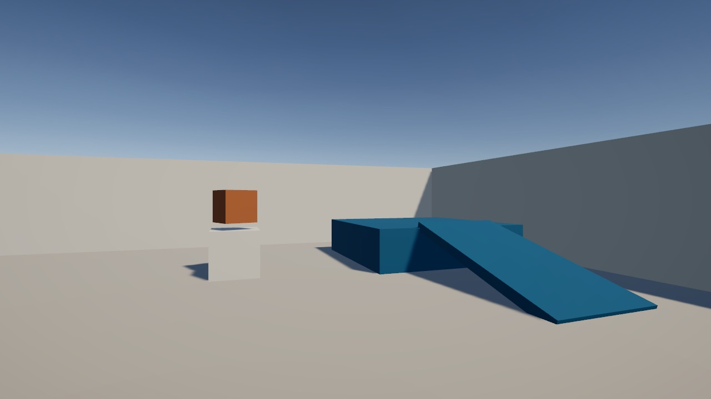
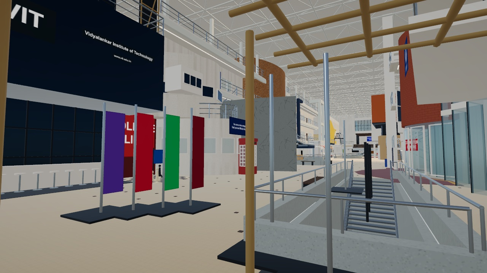
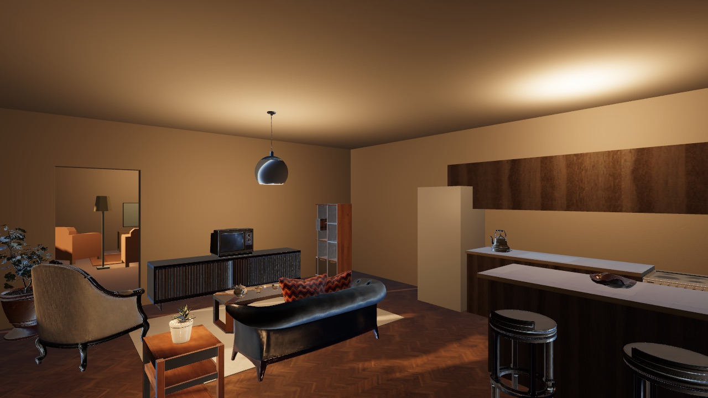

Starter
A courtyard with a ramp, a step and a spinning cube. Every new world begins as a copy of it.
Play a world on your computer or phone, open the same world in Unity, change how it works, and add your own with a pull request. When it merges, it goes live here. No Unity experience needed.
Turn(touch.LookDegrees);
Move(move, running ? runSpeed : walkSpeed);
// Swap the two speeds and press Play.
// Now Shift slows you down.Each one runs in your browser. The code behind it is one click away.

A courtyard with a ramp, a step and a spinning cube. Every new world begins as a copy of it.

Level 1 of the VIT main building, generated from code. Eight viewpoints and three working staircases.

A cozy living room and kitchen, built twice so you can compare: low-poly and realistic.
On a phone, your left thumb moves and your right thumb looks. Each world is a 10 MB to 28 MB download there.
Six lessons, in order. Each one opens real code from these worlds and ends with something for you to change. Stop reading the moment you want to build.
Make something move with your own script
Add a jump to the player
Build a way up to somewhere
Replace the plain fridge with a real model
Turn a room to night, and keep it cozy
Build a world and run it on your phone
Your first world can be one room. A small place you made yourself beats a big plan that never ships.
In Unity, choose Learn Unity > New world and give it a name
Models, light, a script or two. It all stays in your own folder
Automatic checks tell you exactly what to fix
Once merged, it goes on this site, and it runs on their phones too